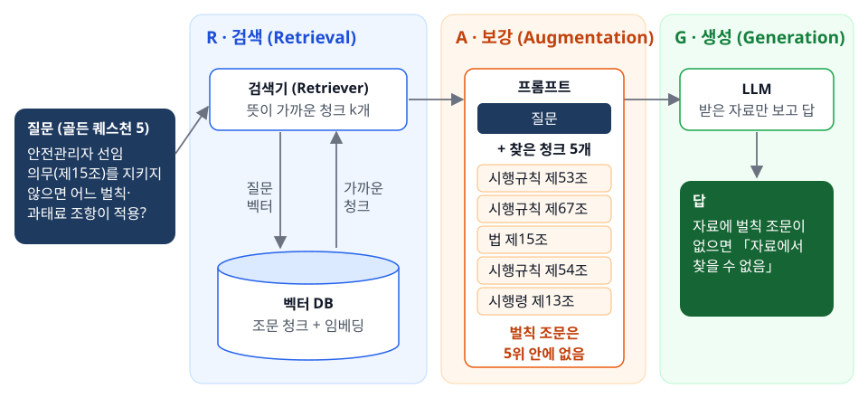
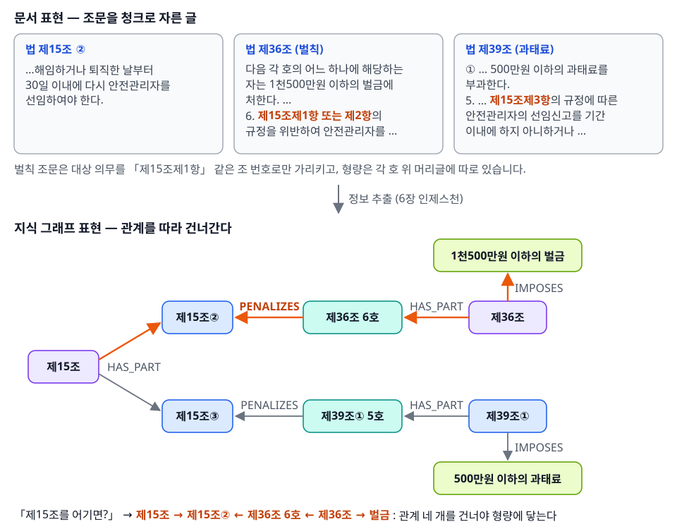
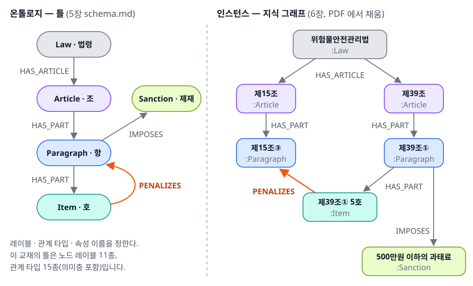

법령 질문의 답은 근거까지 정확해야 합니다. Text2SQL과 기본 RAG가 어디서 막히는지, 여러 조문을 거쳐야 답을 찾을 수 있는 멀티홉 질문에 왜 그래프가 적합한지 이 교재의 법령으로 살펴봅니다. 이어서 온톨로지(틀)와 인스턴스(지식 그래프)를 구분하고, 속성 그래프·Neo4j·Cypher를 간략히 소개합니다.
무엇을 · 왜#
이론 두 장(1·2장)의 뼈대는 「Graph DB based RAG」 정리 노트를 따릅니다. 노트는 「Why?」에 이렇게 답합니다. 지식의 정확도(Accuracy)를 높이기 위해서입니다. 이어서 흔히 쓰는 두 방법인 Text2SQL·기본 RAG와 비교하고, 지식을 형식화하는 좋은 기법으로 「온톨로지 → 그래프 DB」를 제시하며, 문서 기반 RAG와 달리 멀티홉 질의가 가능하다는 점을 장점으로 꼽습니다. 이 장도 그 순서를 따릅니다. 노트의 그림은 같은 의미를 전달하도록 이 교재의 법령 사례로 새로 그렸습니다.
지식의 정확도#
노트가 처음 제시한 참고 사례는 보험 심사 규칙을 훈련·표현·추론하는 일이었습니다. 이러한 규칙 지식은 낱말 하나만 틀려도 결론이 달라집니다. 법령도 같습니다. 「30일」과 「14일」, 「시ㆍ도지사」와 「소방서장」, 「벌금」과 「과태료」를 바꿔 말하면 그 답은 쓸 수 없습니다.
그래서 이 교재의 답은 두 가지를 갖춰야 합니다.
- 값(기한·기관·금액)이 원문과 글자까지 일치해야 합니다.
- 어느 조문을 거쳐 나온 답인지 함께 보여 줘야 합니다. 사람이 원문을 확인할 수 있어야 실무에서 믿고 쓸 수 있습니다.
Text2SQL과 비교: 스키마 관리 비용#
Text2SQL은 질문을 받으면 LLM이 SQL을 쓰고, 이를 관계형 DB에서 실행한 결과를 다시 LLM에 전달해 답을 만듭니다. 값이 DB에서 그대로 나오므로 숫자와 기한은 정확합니다.
노트가 짚은 약점은 스키마 관리 비용입니다. 법령을 테이블에 담으면 조·항·호·목 테이블에 더해 조문 인용, 하위법령 위임, 벌칙 호가 가리키는 의무, 형량, 별표, 용어 정의를 모두 따로 연결해야 합니다. 이 교재의 그래프는 적재 직후 관계 타입이 11종이었는데, 출발 레이블과 도착 레이블까지 구분해 세면 조합이 108가지였습니다(6장의 db.schema.visualization()). 관계형 DB로 옮기면 이 조합마다 외래 키나 연결 테이블을 정해야 하고, 관계가 늘어날 때마다 테이블을 바꾸고 LLM에 주는 스키마 설명도 고쳐야 합니다.
그래프 DB에서는 새 관계 타입이 MERGE (a)-[:IMPLEMENTS]->(b) 한 줄로 만들어지고, DB가 데이터에서 스키마를 추출해 반환합니다(8장의 get-schema). 조문을 몇 단계 건너는 조회도 -[*1..3]->처럼 길이만 적으면 됩니다. 4장의 맛보기 그래프에서는 과태료 조문(제39조)에서 출발해 두 단계 만에 제15조의 항에 도달합니다.
다만 그래프라고 스키마가 필요 없는 것은 아닙니다. Claude가 Cypher를 쓰려면 스키마를 읽어야 하고(이 교재에서 9,137자), 무엇을 노드와 관계로 담을지 설계하는 비용도 그대로 남습니다. 이 비용은 5장과 11장에서 다시 다룹니다.
기본 RAG와 비교: 검색 · 보강 · 생성#
기본 RAG(Retrieval-Augmented Generation)는 세 단계로 이루어집니다.
- 검색(Retrieval): 문서를 청크로 잘라 임베딩해 벡터 DB에 넣어 두고, 질문과 의미가 가까운 청크 k개를 가져옵니다.
- 보강(Augmentation): 질문과 검색한 청크를 하나의 프롬프트로 묶습니다.
- 생성(Generation): LLM이 그 자료만 보고 답합니다.

이 방식은 답이 한 조문에 모여 있는 질문에 강합니다. 골든 퀘스천 2번의 「30일」과 「14일」은 법 제15조의 제2항과 제3항에 함께 있어 벡터 검색으로도 잘 찾습니다.
반면 5번 같은 질문에는 약합니다. 벌칙 조문은 「제15조제1항 또는 제2항의 규정을 위반하여 …」처럼 대상 의무를 조 번호로만 가리키는 호를 아홉에서 열다섯 개씩 늘어놓은 목록입니다. 그래서 질문과 의미가 가까운 것은 벌칙 조문이 아니라 의무를 정한 조문입니다. 조문 단위로 자르고 OpenAI 임베딩으로 찾았을 때 5번의 상위 5개는 시행규칙 제53조·제67조, 법 제15조, 시행규칙 제54조, 시행령 제13조였습니다. 벌칙 조문이 빠진 자료를 받은 LLM은 「제15조의 선임 의무 위반에 대한 벌칙·과태료 조항은 자료에서 찾을 수 없음」이라고 답했습니다. 「자료에 없다」는 말이 「법에 없다」처럼 읽히는 것이 가장 위험합니다. 어떤 구성에서 얼마나 놓쳤는지는 10장에서 측정합니다.
멀티홉 질의: 문서 표현과 그래프 표현#
노트는 그래프 DB 기반 RAG의 장점으로 멀티홉 질의를 듭니다. 여러 단계를 거쳐야 하는 질의를 한 번에 처리할 수 있다는 뜻입니다. 5번 질문을 두 가지 방식으로 나란히 표현하면 차이가 보입니다.

문서 표현에서는 의무(제15조), 그 의무를 가리키는 벌칙 호(제36조 6호), 형량(제36조 머리글)이 서로 다른 청크에 있고, 이어 주는 단서는 「제15조제1항」이라는 번호뿐입니다. 검색 한 번으로는 세 청크를 함께 가져오기 어렵습니다.
그래프 표현에서는 그 번호가 이미 PENALIZES 관계로 표현되어 있습니다. 6장에서 적재한 그래프에 Cypher 질의를 한 번 실행하면 제15조와 제18조의 각 항에서 벌칙 호를 거쳐 형량까지 한꺼번에 나옵니다.
MATCH path = (s:Sanction)<-[:IMPOSES]-(:Provision)-[:HAS_PART*1..2]->(pen)
-[:PENALIZES]->(:Provision)<-[:HAS_PART]-(a:Article)
WHERE a.pid IN ['위험물안전관리법:제15조','위험물안전관리법:제18조']
RETURN path

같은 경로를 테이블로 받으면 열 행이 나옵니다.
| 의무 조항 | 벌칙·과태료 호 | 형량 |
|---|---|---|
| 제15조제1항 | 제36조제6호 | 1천500만원 이하의 벌금 |
| 제15조제2항 | 제36조제6호 | 1천500만원 이하의 벌금 |
| 제15조제3항 | 제39조제1항제5호 | 500만원 이하의 과태료 |
| 제15조제5항 | 제36조제7호 | 1천500만원 이하의 벌금 |
| 제15조제6항 | 제37조제1호 | 1천만원 이하의 벌금 |
| 제15조제7항 | 제37조제2호 | 1천만원 이하의 벌금 |
| 제18조제1항 | 제35조제4호 | 1년 이하의 징역 또는 1천만원 이하의 벌금 |
| 제18조제1항 | 제39조제1항제7호 | 500만원 이하의 과태료 |
| 제18조제2항 | 제39조제1항제7호의2 | 500만원 이하의 과태료 |
| 제18조제3항 | 제35조제5호 | 1년 이하의 징역 또는 1천만원 이하의 벌금 |
9장에서 Claude는 이런 경로를 찾는 Cypher 질의를 스스로 작성해 5번 질문의 벌칙·과태료 호 아홉 개를 모두 찾아 답했습니다.
지식의 형식화: 온톨로지와 인스턴스#
노트는 지식을 형식화하는 좋은 기법으로 「Ontology → Graph DB」를 듭니다. 두 용어를 구분해 보겠습니다.
- 온톨로지(ontology): 해당 분야에 어떤 종류의 대상이 있고, 서로 어떤 관계를 맺으며, 어떤 속성을 갖는지 정한 틀입니다. 이 교재에서는
schema.md에 적은 레이블·관계 타입·속성입니다. - 인스턴스 데이터: 그 틀에 맞춰 채운 실제 사례입니다. 「위험물안전관리법 제15조제3항」이라는 노드 하나하나입니다. 틀과 사례를 합쳐 지식 그래프라고 부릅니다.
빵틀과 빵에 빗대면 쉽습니다. 빵틀(온톨로지)을 한 번 잘 만들어 두면 같은 틀로 다른 법령의 빵(인스턴스)을 계속 구울 수 있습니다.

이 교재에서 두 층을 만드는 주체는 서로 다릅니다.
| 층 | 무엇 | 누가 만드나 |
|---|---|---|
| 틀 | 노드 레이블 11종, 관계 타입 15종과 속성 | 사람이 골든 퀘스천에서 출발해 Claude Code와 설계하고 검토(5장) |
| 인스턴스 · 구조 | 법령·조·항·호·목, 인용·위임·벌칙 관계 | Claude Code가 작성한 코드가 규칙에 따라 PDF에서 추출해 채움(6장) |
| 인스턴스 · 의미 | 주체(Actor)와 의무·권한(Norm) | LLM이 조문에서 추출하고 사람이 검토(7장) |
그래프 DB가 형식화에 잘 맞는 이유는 틀이 그대로 저장 구조가 되기 때문입니다. 온톨로지의 종류는 레이블로, 관계는 관계 타입으로, 속성은 속성으로 옮겨집니다. 노트가 「Visualization」을 함께 적은 것처럼, 틀과 데이터를 눈으로 볼 수 있다는 점도 장점입니다. Neo4j Browser의 CALL db.schema.visualization()은 저장된 데이터를 바탕으로 틀을 그려 보여 줍니다(6장).
LPG와 RDF, 그리고 Neo4j · Cypher#
그래프를 저장하는 모델은 크게 두 가지입니다.
| 구분 | 속성 그래프(LPG) | RDF(시맨틱 그래프) |
|---|---|---|
| 기본 단위 | 노드 · 관계 · 속성 | 주어 · 술어 · 목적어(트리플) |
| 질의 언어 | Cypher · Gremlin · GQL | SPARQL |
| 표준 | GQL(ISO/IEC 39075) | W3C RDF · RDFS · OWL |
| 강점 | 직관적인 모델링, 개발 친화 | 의미 추론, 조직 간 데이터 통합 |
| 대표 제품 | Neo4j · Amazon Neptune | GraphDB · Stardog |
이 교재는 속성 그래프인 Neo4j를 씁니다. Neo4j는 ACID 트랜잭션을 지원하는 그래프 전용 DB이고, 이 교재에서는 Docker로 띄운 Community 판 5.26을 씁니다(3장). 속성 그래프는 관계에도 속성을 추가할 수 있습니다. 이 교재의 REFERS_TO 관계에는 인용 종류(kind)와 원문 표기(raw)가 붙어 있습니다.
Cypher는 찾으려는 형태를 화살표 그림처럼 표현합니다. 4장의 맛보기 그래프에서 실제로 실행한 질의입니다.
MATCH (pen:Article)-[r:REFERS_TO]->(a:Article {no:'제15조'})
RETURN pen.no AS 조문, pen.title AS 제목, r.at AS 호;
| 조문 | 제목 | 호 |
|---|---|---|
| 제39조 | 과태료 | 제5호 |
| 제36조 | 벌칙 | 제6호 |
화살표 방향을 반대로(<-[:REFERS_TO]-) 쓰면 0행이 나옵니다. 관계에는 방향이 있다는 점을 기억해 두세요. 그래프 DB가 관계형 DB를 대체하는 것은 아닙니다. 거래처럼 행 단위로 쌓이는 데이터는 관계형 DB에, 참조와 위임처럼 연결이 핵심인 지식은 그래프에 두고 함께 쓰는 것이 일반적입니다.
확인 문제#
골든 퀘스천 5번이 기본 RAG에 특히 어려운 이유는 무엇인가요?
벌칙 조문은 대상 의무를 「제15조제1항 또는 제2항」 같은 조 번호로만 가리키고, 형량은 각 호 위 머리글에 따로 있습니다. 질문과 의미가 가까운 것은 의무를 정한 조문이라서 벡터 검색은 해당 조문을 먼저 가져오고, 벌칙 조문은 순위 밖으로 밀립니다. 답에 필요한 의무 조항 → 벌칙 호 → 형량이 서로 다른 청크에 흩어져 있어 검색 한 번으로 모으기 어렵습니다.
이 교재에서 온톨로지와 인스턴스는 각각 무엇인가요?
온톨로지는 schema.md에 정한 틀입니다. 노드 레이블(Law, Article, Paragraph, Item, Sanction, Actor, Norm 등 11종), 관계 타입(HAS_PART, REFERS_TO, IMPLEMENTS, PENALIZES, IMPOSES 등 15종)과 속성이 여기에 속합니다. 인스턴스는 그 틀에 맞춰 PDF에서 채운 실제 노드와 관계입니다. 「위험물안전관리법 제15조제3항」 노드나, 제39조제1항제5호에서 제15조제3항으로 가는 PENALIZES 관계가 그 예입니다.
그래프를 쓰면 Text2SQL의 스키마 관리 비용이 모두 사라지나요?
아닙니다. 새 관계 타입을 더하거나 DB에서 스키마를 추출하는 일은 쉬워지지만, 무엇을 노드와 관계로 담을지 설계하는 비용은 남습니다. 질의할 때도 Claude는 스키마(이 교재에서 9,137자)를 읽고 Cypher를 써야 합니다. 스키마는 골든 퀘스천에서 출발해 사람이 검토하며 설계합니다(5장).
참고 자료#
- Knowledge Graphs & LLMs: Multi-Hop Question Answering — https://medium.com/neo4j/knowledge-graphs-llms-multi-hop-question-answering-322113f53f51
- Unifying LLMs & Knowledge Graphs for GenAI: Use Cases & Best Practices (neo4j.com) — https://neo4j.com/blog/unifying-llm-knowledge-graph/
- Neo4j Cypher Manual — https://neo4j.com/docs/cypher-manual/current/